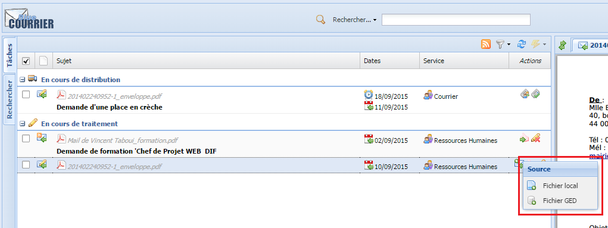
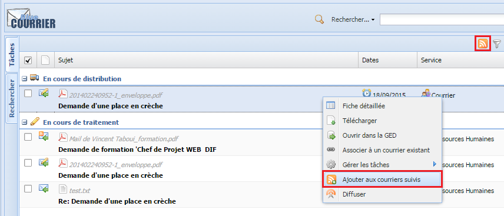

BlueCourrier User Manual¶
Introduction¶
Votre organisation et la gestion du courrier¶
La mise en place de la gestion électronique du courrier remplace les outils utilisés jusque là dans votre organisation (cahiers, fichiers - Excel, Word - et solutions spécifiques...).
Blue Courrier devient l'outil de référence pour la gestion de courriers et permet l’exhaustivité des enregistrements à partir des différents points de réception du courrier. Il permet également l’enrichissement des informations caractérisant le courrier par les différents intervenants.
Accès à Blue Courrier¶
Remplacez http://{SERVEUR} ci-dessous par les valeurs issues de votre installation.
Connectez-vous à l'adresse de Blue Courrier :
- http://{SERVEUR}/share/page/yamma
Entrez vos identifiants de connexion. Le logo de Blue Courrier doit alors s'afficher pendant que l'application charge. Si vous êtes sur Alfresco Share, c'est que l'adresse saisie était :
- http://{SERVEUR}/share
Saisissez à nouveau l'adresse de Blue Courrier :
- http://{SERVEUR}/share/page/yamma
Il n'y a pas de message explicite lorsque la session utilisateur a expiré. En cas de comportement anormal de l'application, lorsqu'un courrier ne s'affiche pas par exemple, vérifiez que vous êtes toujours connecté. Le meilleur moyen étant de recharger la page avec le navigateur. Si vous êtes connecté, l'application se recharge, sinon vous êtes dirigé sur la page d'authentification.
Rôles¶
Blue Courrier définit 3 groupes d'utilisateur :
- Assistant : distribue le courrier et l'assigne à un instructeur ;
- Instructeur : traite le courrier qui lui est assigné et peut ajouter une réponse ;
- Responsable : valide les distributions et à un suivi sur les courriers de son service ;
- Superviseur : à accès en lecture aux courriers de ses services.
Blue Courrier fonctionnant sur la notion de site Alfresco Share, les groupes ci-dessus complètent les groupes Alfresco Share.
Aperçu de l'espace de travail utilisateur¶
Introduction¶
Vous pouvez enregistrer et instruire vos courriers à l'aide de l'espace de travail utilisateur de l'application Blue Courrier.
Cet espace se caractérise par les éléments suivants :
- A : Barre d'outils
- B : Panneau Tâches et Courriers
- C : Panneau Informations
- D : Panneau Aperçu
Barre d'outils¶
La barre d'outils permet :
- d'effectuer des recherches rapides ;
- d'accéder à la recherche avancée ;
- d'accéder au Profil utilisateur.
Panneau Tâches et Courriers¶
Présent en haut à gauche de l’interface Blue Courrier, ce panneau synthétise votre travail à faire, votre liste de courriers et vous aide dans le traitement et l'organisation de vos courriers. Il se compose de deux onglets et de quatre boutons d'actions.
Onglets disponibles¶
Afin de faciliter votre accès aux courriers, deux onglets sont présents dans votre panneau des tâches et courriers.
L'onglet tâche¶
Il liste les courriers pour lesquels vous avez une tâche à réaliser.
L'onglet rechercher¶
Il affiche les courriers accessibles par l'utilisateur en fonction de leur localisation et du niveau de leur traitement. Attention toutefois, l'onglet rechercher ne vous proposera de courrier que si vous possédez des droits de manager.
Actions possibles¶
Votre onglet tâche vous propose quatre actions pour faciliter l'accès à vos courriers et à leur traitement.
Inclure les courriers suivis¶
Pour éviter une surcharge d'information, votre onglet des tâches ne présente pas vos courriers suivis. Si vous souhaitez y accéder, vous pouvez actionner ce bouton. Vos courriers suivis apparaissent alors dans votre onglet tâches.
Filtrer les courriers¶
Pour faciliter l'accès à vos courriers, vous pouvez les trier en fonction de :
- leur type (suivi ou non),
- la nature de leur processus de distribution (Traitement, Suivi Utile, Non fixé),
- leur statut (En cours de distribution, en cours de validation...)
Rafraîchir la page¶
Cette action vous permet de mettre à jour votre tableau des tâches sans devoir mettre à jour l'application.
Effectuer une action groupée¶
Si vous possédez plusieurs courriers demandant le même traitement, vous pouvez les sélectionner puis effectuer une action groupée.
Panneau Informations¶
Accessible en bas à gauche de l’interface Blue Courrier, le panneau d'information permet d’accéder à l’ensemble des informations attachées à un courrier. Celles-ci sont regroupées selon leur nature à travers les onglets suivants.
Le fil de discussion¶
Il affiche les relations entre les différents courriers échangés avec un, ou plusieurs, interlocuteurs sur un sujet commun.
Les métadonnées¶
Cet écran affiche la liste des caractéristiques du courrier. Elles peuvent être modifier par tous les agents qui ont accès au courrier.
L'historique¶
L'historique retrace l'ensemble des actions suivantes qui ont été faites sur le courrier :
- pré-assignation du courrier ;
- affectation du courrier ;
- partage du courrier ;
- mise en copie du courrier ;
- transmission pour validation de la distribution ;
- distribution ;
- assignation pour traitement ;
- acceptation ou refus du traitement ;
- association à un courrier ;
- sélection des relecteurs ;
- validation du courrier sortant ;
- refus du courrier sortant : le commentaire apparaît aussi dans l'historique ;
- ajout d'une pièce-jointe ;
- envoi du courrier ;
- fin du traitement.
L'ensemble de ces actions sont accompagnées de l'heure de réalisation et du nom de l'agent qui a effectué l'action.
Les commentaires¶
Cet écran regroupe l'ensemble des commentaires ajoutés à un courrier. Il permet aussi d'en ajouter en cliquant sur l'icône en bas à droite de votre écran. Ces commentaires sont également visible lors d'une ouverture dans Alfresco Share. Les commentaires publics sont visibles par toutes les personnes ayant accès au courrier, à la différence des courriers privées qui ne sont accessibles qu'à leurs destinataires.
Les pièces jointes¶
Nommé Attachements, ce dernier onglet regroupe les pièces-joints du courrier. Il offre la possibilité d'ouvrir les pièces-jointes du courrier, mais aussi d'en ajouter en cliquant sur l'icône en bas à droite. Les pièces-jointes, tout comme les commentaires, possèdent les mêmes droits que le courrier auxquels elles sont attachées.
Panneau Aperçu¶
Situé à droite de l’interface Blue Courrier, le panneau Aperçu affiche la prévisualisation d’un, ou plusieurs, courrier.
Le mécanisme de prévisualisation repose sur les mécanismes proposés par Alfresco et par votre navigateur. Le document est ainsi d'abord converti en PDF en tâche de fond par Alfresco, puis envoyé à votre navigateur qui le présente.
Gestion du courrier entrant¶
Enregistrement du courrier arrivé¶
Le processus est, de manière synthétique, le suivant :
Enregistrer un fichier¶
Les courriers entrants peuvent être ajoutés manuellement ou être déposés par un scanner dans la bannette "Entrant" du service destinataire.
Le courrier papier doit avoir été préalablement numérisé à l'aide d'un scanner.
Pour enregistrer un courrier entrant dans Blue Courrier, procédez comme suit :
- Dans la barre d'outils, cliquez en haut à droite sur l'icône représentant un nuage. Une fenêtre pour importer un document s'affiche :
- Vous pouvez soit importer un courrier présent sur votre ordinateur, soit importer un courrier présent sur le serveur.

* Pour importer un courrier entrant présent sur *le disque dur de votre ordinateur* :
* Sélectionnez en (1) un service destinataire,
* Sélectionnez en (2) le filtre *Entrant*,
* Cliquez sur l'icône en (3) pour ouvrir la fenêtre permettant de choisir un fichier présent sur votre ordinateur,
* Cliquez sur *Téléverser*.
- Pour importer un courrier entrant *déjà* présent sur le *serveur Alfresco* :

* Sélectionnez en (1) un service destinataire,
* Sélectionnez en (2) le filtre *Entrant*,
* Cliquez sur l'onglet *Serveur* pour ouvrir la fenêtre permettant de choisir un courrier *déjà* stocké sur le serveur Alfresco,
* Naviguez dans l'arborescence des sites et sélectionnez le courrier en (4),
* Cliquez sur *Téléverser* en (5).
* Notez que le bouton d'importation *Téléverser* n'est disponible qu'après avoir indiqué un service destinataire et sélectionné un courrier.
* La barre de progression du téléchargement du fichier apparaît tout le temps de son enregistrement.
- Cliquez sur l'icône de rafraîchissement pour faire apparaître le courrier nouvellement importé.
-
Cliquez sur le courrier nouvellement importé :
- Le panneau Courriers affiche les courriers entrants en attente en (1). En (2), 2 actions sont présentes :
- Pré-assigner, pour indiquer quel est le service de destination ;
- Distribuer, pour distribuer le courrier lorsqu'il est prêt.
- Le panneau Information affiche l'onglet Fil discussion du fichier. En (3), l'objet du courrier est vide car le système ne l'a pas extrait automatiquement.
- Double-cliquez sur le courrier nouvellement importé, le panneau Aperçu affiche l'aperçu du fichier.
- Le panneau Courriers affiche les courriers entrants en attente en (1). En (2), 2 actions sont présentes :
Les informations pertinentes d'un courrier peuvent être extraites à l'aide d'un copier-coller.
Enregistrer un fax¶
L'enregistrement des fax peut simplement se faire par dépôt de ceux-ci dans la bannette "Entrant" du service requis.
Si votre organisation ne dispose que d'un fax manuel, il suffit de scanner les fax puis de les traiter comme n'importe quel courrier.
Enregistrer un mél¶
L'enregistrement des méls se fait par glisser/déplacer des méls depuis un outil de messagerie (par exemple outlook) vers une boîte imap, basée sur Alfresco, également configurée sur ce même outil de messagerie.
Enregistrer des courriers produits par des applications tierces¶
Un grand nombre de courrier à traiter est généré par des applications tierces. A long terme, les applications « métiers » seront modifiées pour s’intégrer avec l’ECM.
Les documents ainsi générés peuvent être intégrés dans la gestion de courrier en les déposant simplement dans les bannettes "Entrant" des services requis.
Qualification du courrier arrivé¶
Après dématérialisation, les courriers sont stockés dans la bannette entrant du service logistique et accessibles depuis le panneau des tâches et des courriers des agents responsables de la qualification. Les agents du service logistique peuvent alors compléter les métadonnées nécessaires du courrier.
Distribution du courrier arrivé¶
Le circuit du courrier prévoit la pré-distribution suivante avant la transmission effective aux services d'instruction :
- par les agents du service courrier pour saisir les méta-données et indiquer les services destination (pour attribution, pour copie...) ;
- par les responsables du service courrier pour valider la distribution.
A chaque étape, les méta-données et services destinataires peuvent être modifiés.
Pré-assigner et/ou ré-assigner les services¶
Assigner un courrier à des services consiste à définir pour ce courrier :
- le service responsable,
- les services en copie.
Selon le type d'organisation, sa taille et son type de management, le service responsable peut être un service instructeur ou un service hiérarchique de plus haut niveau qui redistribuera par la suite le courrier au service instructeur. Suivre la chaîne hiérarchique permet de s'assurer que chacun a vu le courrier.
Au besoin, les services peuvent se réassigner entre eux le traitement de certains courriers. Toutes ces actions sont historisées et on peut donc connaître le circuit suivi par les courriers et les acteurs ayant participé à sa distribution.
Pré-assignation¶
Lorsqu'un courrier est importé dans le système de gestion de courrier, il ne peut être distribué immédiatement, il passe par plusieurs étapes :
- Les agents du service courrier saisissent les méta-données et vérifient les services destinataires du courrier enregistrés à l'aide de la farde ou indiquent les services destinataires ;
- Les agents du service courrier confirment ou corrigent les pré-assignations du courrier et apportent éventuellement des modifications au niveau des méta-données ;
- Les responsables du courrier valident les pré-assignations et, en ce sens, distribuent réellement le courrier.
Pré-assignation¶
Les courriers sont initialement en attente de traitement.
L'assistant du service courrier, après avoir sélectionné un service destinataire et saisi les méta-données confirme que le courrier peut passer à l'étape suivante en cliquant sur l'icône représentant un camion.
Cette action peut être effectuée en masse.
Pour pré-assigner un courrier :
- Cliquez sur l'icône Assigner les services. La fenêtre suivante s'affiche :
- Sélectionnez le Type de traitement du courrier ;
- Le traitement Traitement transfert le courrier au service destinataire. L'instructeur principal a la possibilité d'ajouter une réponse à ce courrier,
- Le traitement Suite Utile transfert le courrier au service destinaire. L'instructeur principal n'a pas la possibilité d'ajouter une réponse,
- Choisissez s'il s'agit d'un courrier avec validation ou s'il s'agit d'une distribution directe et immédiate ;
- Cliquez à droite de vos services pour indiquez leur rôle dans la distribution :
- 1 clic pour le transfert d'une copie pour information ,
- 2 clics pour indiquer le service en traitement ,
- 3 clics pour définir le ou les services en collaboration ,
- un quatrième clic vous ramène à l'étape initiale .
- Cliquez sur Enregistrer.
Dans la liste des tâches, les courriers sont toujours en attente de traitement.
- Cliquez sur l'icône représentant un camion.
Les courriers passent alors en cours de distribution.
Vérification¶
Les courriers sont maintenant en cours de distribution.
Les courriers sont initialement en attente de traitement. L'utilisateur corrige éventuellement les métadonnées ainsi que les services destinataires comme indiqué précédemment et confirme la distribution du courrier en cliquant sur le bouton Distribuer.
Le courrier est alors immédiatement mis à disposition des responsables du courrier.
Validation de la distribution¶
Les courriers sont en cours de distribution.
Pour distribuer un courrier :
- Cliquez l'icône en (1). La fenêtre de pré-assignation apparaît ;
- Corrigez les services destinataires comme indiqué précédemment ;
- Cliquez sur le bouton Distribuer lorsque l'information vous convient. Cliquez sur le bouton Enregistrer pour enregistrer les informations et traiter d'autres courriers.
La distribution est disponible en action de masse.
A l'issue de cette action, le courrier est physiquement stocké dans le répertoire Bannette/Entrant du service correspondant. Le courrier disparaît de la fenêtre des tâches et est déplacé dans le service destinataire qui était indiqué.
La distribution est terminée.
Copies pour avis/pour information¶
Blue Courrier permet de partager les courriers en lecture ou en écriture, permettant au destinataire d'en prendre connaissance, et éventuellement d'en faire un commentaire. Le destinataire peut, à son tour, partager ce courrier sans aller au-delà de ses propres droits.
Le système de copie est en fait un système de partage du courrier. Aucune copie physique n'est faite, seule une modification des droits est effectuée afin de permettre aux utilisateurs désignés d'y accéder. Par conséquent, les utilisateurs accèdent à l'original et voient tous les commentaires et méta-données saisies.
Service en copie¶
Lorsqu'un courrier est mis en copie à un service, un mél est envoyé aux utilisateurs ayant le rôle d'assistant du service avec en contenu un lien sur le document dans Blue Courrier. Blue Courrier permet de mettre un ou plusieurs services en copie.
Pour mettre un service en copie :
- Ouvrez la fenêtre de distribution aux services (1) ;
- Effectuez un clic sur la zone à droite du service destinataire pour lui transmettre une copie pour information.
Note : Seuls les membres du groupe ServiceAssistant ont accès aux courriers Pour Information quand ils arrivent dans le service. Il est toutefois possible de diffuser les courriers à un utilisateur ou un groupe en particulier.
Personne en copie¶
Lorsqu'un courrier est mis en copie à un utilisateur, un mél est envoyé à celui-ci avec en contenu un lien sur le document dans Blue Courrier. En outre, cette copie est ajoutée en tant que courrier suivi par l'utilisateur.
Pour mettre un utilisateur en copie :
- Ouvrez la fenêtre de diffusion d'un courrier (clic-droit > diffuser) ;
- Indiquez dans la zone en haut les premières lettres du prénom ou du nom de l'utilisateur.
- Choisissez l'utilisateur dans la liste qui apparaît.
Partage¶
Comme indiqué précédemment, tout service ou utilisateur en copie d'un courrier peut à son tour mettre d'autres services ou utilisateurs en copie. Cette possibilité se traduit par deux actions :
- une tâche de partage pour les assistants d'un service en copie,
- l'accès à l'écran de diffusion pour tous les agents possédant des droits sur un courrier.
Les nouveaux destinataires reçoivent alors un mél avec un lien sur le courrier.
Ré-assignation¶
Lorsque la pré-assignation à un service destinataire d'un courrier a été validée, on parle ensuite d'assignation. Elle n'est plus soumise à vérification.
Attribuer le courrier¶
Le courrier étant distribué dans le service destinataire, l'utilisateur ayant le rôle d'assistant dans ce service peut :
- désigner un agent pour instruire la demande et répondre au courrier ;
- clôturer le traitement du courrier si celui-ci ne nécessite aucune action.
Un agent est attributaire d’un courrier pour réponse.
Pour attribuer un courrier à un agent du service, procédez comme suit :
- Sur le panneau Courriers, sélectionnez l'onglet Tâches.
-
Utilisez l'une des méthodes suivantes :
-
Pour attribuer un seul courrier, cliquez sur l'icône Assigner de la colonne action du courrier. La boîte de dialogue Assigner le traitement du document s'affiche ;
-
Pour attribuer plusieurs courriers en même temps, sélectionnez les courriers souhaités à l'aide des cases à cocher de la liste, puis cliquez sur le menu Actions > Assigner le traitement. La boîte de dialogue Assigner le traitement s'affiche.
-
-
Dans la boîte de dialogue Attribuer, sélectionner un agent dans la liste des agents du service assigné :
-
Saisissez les premières lettres de son nom dans le champ de recherche pour faire apparaître un agent ou sélectionnez un des agents proposés ;
-
Pour valider l'attribution, sélectionnez le nom d'un agent dans la liste, puis cliquer sur le bouton Attribuer.
-
Les services en collaboration peuvent aussi sélectionner un instructeur chargé du suivi du courrier. L'icône est alors légèrement modifiée au profit de l'association propre à la collaboration .
Traitement du courrier entrant¶
L’agent attributaire du courrier est responsable des suites à donner. Il peut :
- Ajouter une réponse ;
- Clore le traitement du courrier qui lui est attribué ;
- Refuser le traitement ;
Dans le cas d'un courrier Pour Suite Utile, seuls les actions clore le traitement et refuser le traitement sont disponibles.
Clore le traitement d'un courrier¶
L'instructeur désigné peut décider de clôturer un courrier.
Procédez comme suit :
- Sur le panneau Courriers, sélectionnez l'onglet Tâches.
-
Utilisez l'une des méthodes suivantes :
- Pour clôturer un seul courrier, cliquez sur l'icône Terminer le traitement de la colonne action du courrier. Le courrier disparaît alors de votre panneau Courriers ;
- Pour clôturer plusieurs courriers en même temps, sélectionnez les courriers souhaités à l'aide des cases à cocher de la liste, puis cliquez sur le menu Actions > Terminer le traitement. Les courriers disparaissent alors de votre panneau Courriers.
Refuser le traitement d'un courrier¶
L'instructeur désigné peut refuser un courrier.
Procédez comme suit :
- Sur le panneau Courriers, sélectionnez l'onglet Tâches.
-
Utilisez l'une des méthodes suivantes :
-
Pour refuser un seul courrier, cliquez sur l'icône Refuser le traitement de la colonne action du courrier. Le courrier est à nouveau disponible dans la bannette courriers entrants du service pour une nouvelle affectation ;
-
Pour refuser plusieurs courriers en même temps, sélectionnez les courriers souhaités à l'aide des cases à cocher de la liste, puis cliquez sur le menu Actions > Refuser le traitement. Les courriers sont à nouveau disponibles dans la bannette courriers entrants du service pour une nouvelle assignation.
-
Gestion du courrier sortant¶
Gestion des réponses¶
Le processus est, de manière synthétique, le suivant :
Ajouter une réponse à un courrier¶
Répondre au courrier consiste à ajouter un document de réponse à un courrier en cours de traitement.
Cette action n'est possible que si votre courrier est dans un circuit de traitement Traitement.
Vous pouvez construire la réponse à l'aide de vos outils habituels. Vous pouvez également utiliser Alfresco Share comme une plate-forme d'édition collaborative.
Votre réponse est finalement :
- stockée dans votre ordinateur sur votre disque dur ou un disque réseau ;
- stockée dans Alfresco.
Pour ajouter une réponse à un courrier, procédez comme suit :
- Sur le panneau Courriers, sélectionnez l'onglet Tâches ;
-
Cliquez sur le menu Ajouter une réponse de la colonne action du courrier, puis sélectionnez l'une des actions suivantes :
-
Pour ajouter un fichier local de votre ordinateur, cliquez sur Fichier local. La boîte de dialogue Choisissez un fichier en réponse s'affiche ;
-
Pour ajouter un fichier de la GED, cliquez sur le Fichier GED. La boîte de dialogue Sélectionner un fichier s'affiche ;
-

- Dans la boîte de dialogue Choisissez un fichier en réponse, cliquez sur le bouton Choisir ;
- Sélectionnez un fichier, puis cliquez sur Ouvrir ;
- Cliquez sur le bouton Envoyer.
- Lorsque le transfert du fichier de réponse est terminé et qu'il est correctement enregistré dans Blue Courrier, cliquez sur le bouton Rafraîchir du panneau Tâches. Le courrier de réponse apparaît dans la liste des courriers avec, comme objet, l'objet du courrier en cours de traitement précédé de la mention « Re: ».

Supprimer une réponse à un courrier¶
Pour supprimer un courrier de réponse, procédez comme suit :
-
Sur le panneau Courriers, sélectionnez l'onglet Tâches.
-
Sur le courrier de réponse, cliquez sur le bouton Supprimer de la colonne Actions.
Envoi d'un courrier sortant¶
Courrier avec validation¶
Selon sa nature, un courrier de réponse peut nécessiter une(des) validation(s) et parcourir ainsi la hiérarchie interne
Pour soumettre un courrier de réponse à validation, procédez comme suit :
- Sur le panneau Courriers, sélectionnez l'onglet Tâches ;
- Sur le courrier à envoyer, cliquez sur Terminer le traitement dans la colonne Actions. La boîte de dialogue Terminer le traitement s'affiche.
- Sélectionnez un ou plusieurs relecteurs dans la colonne Acteurs de validation.
- Vous pouvez ajouter un signataire en cochant Certifier et en indiquant le nom du signataire.
- Cliquez sur Lancer pour transmettre le courrier au premier relecteur.
Valider un courrier sortant¶
Pour valider un courrier de réponse, procédez comme suit :
- Sur le panneau Courriers, sélectionnez l'onglet Tâches.
- Sur le courrier de réponse à valider, cliquez sur le bouton Valider. L'écran de validation suivant apparaît alors :
Ce formulaire permet :
- de sélectionner un ou plusieurs autres utilisateurs pour une nouvelle validation ;
- d'approuver le courrier ;
- de refuser le courrier. Il est alors nécessaire de fournir un commentaire ;
Le courrier disparaît alors de la liste des tâches de l'utilisateur.
Courrier sans validation¶
Un courrier sortant peut être directement transmis au service courrier pour envoi postal, et ainsi arriver en fin de circuit sans passer par la voie hiérarchique.
Pour transmettre un courrier directement au service courrier pour envoi postal, l'instructeur doit se mettre en relecteur du courrier :
- Sur le panneau Courriers, sélectionnez l'onglet Tâches ;
- Sur le courrier à envoyer, cliquez sur Terminer le traitement dans la colonne Actions. La boîte de dialogue Terminer le traitement s'affiche.
- Ajoutez l'instucteur en tant que relecteur.
- Cliquez sur le bouton Terminer pour confirmer l'envoi.
Une tâche de validation du courrier sortant est alors demandé à l'instructeur avant envoi aux assistants de son service.
Certifier un courrier sortant¶
Si un utilisateur a été désigné comme signataire, un tâche de certification lui sera assignée après validation du courrier.
Pour certifier un courrier, procédez comme suit :
- Sur le panneau Courriers, sélectionnez l'onglet Tâches.
- Sur le courrier de réponse à valider, cliquez sur le bouton Certifier le document. L'écran de certification suivant apparaît alors :
- Pour placer votre signature sur le courrier, cliquez sur Page puis selectionner. L'écran suivant apparaît :
- Cliquez sur selectionner, puis sur signer.
Le courrier disparaît alors de la liste des tâches de l'utilisateur pour être transmis aux assistants du service de l'instructeur.
Marquer un courrier comme envoyé¶
Le courrier est mis sous pli et centralisé au niveau de chaque service pour être transmis au service courrier pour envoi postal.
C'est à cette étape que les courriers sont marqués comme envoyés dans Blue Courrier.
Tous les courriers (tous services confondus) sont finalement pesés, affranchis par le service courrier interne et collectés en fin de journée par le transporteur de votre organisation.
Pour marquer le courrier comme envoyé, procédez comme suit :
- Sur le panneau Courriers, sélectionnez l'onglet Tâches.
-
Utilisez l'une des méthodes suivantes :
-
Pour marquer un seul courrier comme envoyé, cliquez sur l'icône Marquer comme envoyé de le traitement de la colonne action du courrier. Le courrier est marqué comme envoyé par voie postale et disparaît de la liste des tâches.
-
Pour marquer plusieurs courriers en même temps comme envoyés, sélectionnez les courriers souhaités à l'aide des cases à cocher de la liste, puis cliquez sur le menu Actions > Marquer comme envoyés. Les courriers sont marqués comme envoyés par voie postale et disparaissent de la liste des tâches.
-
Clôturer le traitement d'un courrier¶
Le courrier a été traité et plus aucune tâche n'est à réaliser. L'instructeur peut le marquer comme traité et le faire disparaître de la vue courrier.
Fonctions complémentaires¶
Traitement des courriers¶
Indexer un courrier¶
Informations disponibles¶
Les courriers enregistrés dans Blue Courrier sont caractérisés par les informations suivantes :
- La référence du courrier, cette référence permettant de stocker également un numéro de recommandé, de colissimo, d'accusé de réception...
- L'objet du courrier,
- La référence interne du courrier, correspondant au numéro chrono,
- La date de rédaction, inscrite par l'expéditeur sur son courrier
- La date d'envoi, inscrite par le transporteur (cachet de la poste) sur le contenant (enveloppe, colis...)
- La date de réception (ou date d'arrivée) dans votre organisation,
- La date d'échéance,
- L’expéditeur :
- L'organisation,
- L'instructeur,
- Le signataire,
- L’adresse,
- Le destinataire :
- L'organisation,
- Le destinataire,
- L'adresse,
- La priorité du courrier (Normal, Important, Très important, Réclamation)
- La confidentialité du courrier (Public, Privé)
- Les catégories, permettant d'indiquer une thématique, des mots-clés, une typologie,
- Les commentaires,
- Les pièces-jointes, ces derniers peuvent être de deux natures :
- les pièces-jointes reçues avec le courrier, elles ne peuvent être supprimées,
- les pièces-jointes ajoutées lors du traitement du courrier, l'ensemble des agents accèdent au courrier peut les supprimer.
Ces informations sont accessibles à travers les formulaires suivants :
- Courrier ;
- Expéditeur ;
- Destinataire.
Le formulaire Métadonnées¶
Ce formulaire permet de saisir les informations principales sur le courrier.
Des catégories peuvent être attribuées au courrier afin de faciliter la recherche d'informations transversales au niveau de l'entrepôt, ainsi que la pré-assignation à l'aide des typologies.
Modification de l'expéditeur¶
Si vous constatez que l'expéditeur ou le destinataire sont erronés vous pouvez modifier les champs en sélectionnant un nouvel agent. Il vous faudra cependant vider les champs alors renseigner avant d'effectuer cette action.
Répartition de la saisie des informations¶
Les informations peuvent être saisies par tous les acteurs, à tout moment, et ainsi s'adapter à votre organisation ainsi qu'aux personnes.
La liste suivante indique pour chaque rôle et chaque étape une répartition possible des actions de remplissage :
-
Assistant / Distribution => remplissage de l'objet, des dates et des catégories pour faciliter la distribution ;
-
Responsable / Validation de le pré-distribution => correction de la distribution, éventuellement mise à jour des délais ;
-
Assistant / Assignation d'un instructeur => remplissage de l'objet et des coordonnées car les informations peuvent être connues au niveau du service d'instruction. Dépend de l'organisation du service ;
-
Instructeur / Instruction => remplissage de l'objet et des coordonnées car l'instructeur va passer du temps à faire la réponse ;
Rechercher un courrier¶
Trois types de recherche sont disponibles :
- la recherche dite plein texte, permettant d'effectuer une recherche sur les champs suiants d'un courrier :
- son objet,
- sa référence (numéro chrono)
- son nom de fichier.
- la rechercher par service, permettant d'accéder à l'ensemble des courriers stockés dans son ou ses services ;
- la recherche avancée, permettant d'effectuer une recherche précise sur l'ensemble des éléments du courrier.
A l'issue de la recherche, tous les résultats s'affichent dans l'onglet Recherche du panneau Courriers.
Recherche rapide plein texte¶
Dans le cadre de cette recherche, les éléments s'affichent dans une liste sous le champ de recherche.
- Tapez les premières lettres de votre recherche ;
- Validez en appuyant sur la touche Entrée pour afficher tous les courriers répondant à la requête ;
- Sélectionnez un courrier en particulier et validez pour afficher uniquement celui-ci.
Recherche par service¶
Cette recherche permet d'accéder à l'ensemble de ses courriers au sein de son service. Les courriers remontés sont les courriers stockés dans le site Alfresco (PDR et PSU en traitement principal dans ce service) et les courriers suivis par l'utilisateur.
- Cliquez sur l'onglet Rechercher ;
- Sélectionnez votre service
- il est aussi possible de sélectionner l'ensemble des services suivis en effectuant un clic droit sur le service parent
- Indiquez le statut des courriers recherchés pour affiner la recherche.
Recherche avancée¶
Dans le cadre de cette recherche, le formulaire de recherche de courrier s'affiche :
- Formulaire Courrier : Les dates peuvent être sélectionnées dans des intervalles ;
Saisissez les informations attendues et cliquez sur Rechercher. La liste des résultats s'affiche.
Trier les résultats d'une recherche¶
L'affichage des résultats d'une recherche peut être triés en fonction des métadonnées suivantes :
- la référence du courrier ;
- le nom du fichier ;
- l'expéditeur du courrier ;
- la date de rédaction du courrier ;
- la date d'envoi du courrier ;
- la date de réception du courrier ;
- la date de numérisation du courrier ;
- la date d'échéance du courrier ;
- la date de modification du courrier ;
- la taille du fichier ;
- le type MIME du fichier ;
- le type de processus du courrier
- Non renseigné,
- Projet de Réponse (PDR),
- Pour Suite Utile (PSU),
- le type de statut du courrier
- Entrant
- En court de distribution
- En court de Traitement
- Traité
- Sortant
- En court de rédaction
- En attente de validation
- En attente d'envoi
- Traité
- Entrant
Filtrer une recherche¶
Le résultat d'une recherche peut être affiné par les filtres suivants :
- Modifiés récemment (7j) affiche uniquement les courriers de la recherche dont la date de modification est inférieure à J-7 ;
- Echéance permet d'afficher les courriers dont l'échéance est :
- dans moins de 7 jours,
- dans moins de 3 jours.
L'action Supprimer les filtres permet de revenir aux résultats initiaux de la recherche.
Exporter le csv d'une recherche¶
L'ensemble des résultats d'une recherche peuvent être exportés au format CSV.
Suivre un courrier¶
Afin de faciliter votre travail, vous pouvez suivre des courriers et lister uniquement ceux-ci afin de faciliter leur traitement ou analyse.
Par défaut, les Copies pour Information transmises à un agent sont automatiquement ajoutés à ses courriers suivis.
Ajouter un courrier à suivre¶

Pour ajouter un courrier à suivre :
- Cliquez droit sur le courrier que vous souhaitez suivre,
- Cliquez sur Ajouter aux courriers suivis.
Le courrier est maintenant listé comme courrier suivi et peut être affiché en cliquant sur l'icône de flux.
Lister seulement les courriers suivis¶
Pour ne suivre que les courriers suivis :
- Cliquez sur sur l'entonnoir en (1),
- Cochez Courriers suivis en (2).
La liste des tâches se met à jour et ne sont plus visualisés que les courriers suivis en (3).
Pour lister toutes les tâches, et pas seulement celles liées aux courriers suivis, il suffit de cliquer sur l'icône orange.
Retirer un courrier à suivre¶
Cette action est l'inverse de celle permettant de suivre un courrier :
- Clic droit sur un courrier dans la liste des tâches
- Cliquez sur Arrêtez de suivre
Le courrier n'est plus suivi et n'apparaîtra plus dans la liste des courriers suivis.
Visualisation des courriers par simple clic¶
Par défaut, il est nécessaire de double-cliquer sur les courriers dans la liste des tâches pour visualiser les documents. Ce comportement permet de naviguer dans les tâches sans systématiquement afficher les documents, ce qui permet une navigation plus rapide.
Cependant, si vous souhaitez visualiser les documents à chaque fois, par simple clic ou à l'aide du pavé fléché :
- Cliquez sur la double-flèche verte.
Le simple fait de vous positionner sur une tâche visualise maintenant immédiatement le document en synchronisant les vues en temps réel.
Associer deux courriers¶
Lorsqu'un courrier entrant est une réponse à un précédent courrier sortant, il peut être lié à celui-ci afin de reconstituer la totalité de la discussion, consultable dans le panneau Informations dans l'onglet Fil discussion.
Un courrier sortant est naturellement lié à un courrier entrant via le mécanisme d'ajout de réponse.
Pour lier un courrier entrant à un précédent courrier sortant, procédez comme suit :
- Sur le panneau Informations, sélectionnez l'onglet "Fil discussion" ;
- Faites un clic droit sur le courrier ;
- Sélectionnez Associer à un courrier existant. La fenêtre suivante s'affiche :
- Cliquez dans le champ Courrier ;
- Tapez les premières lettres du courrier sortant que vous recherchez ;
- Les courriers répondant à la requête s'affiche dans la liste ;
- Sélectionnez le courrier de votre choix.
Lorsque vous double-cliquerez sur le courrier entrant que vous étier en train de traiter, le fil de discussion fera maintenant apparaître toute la conversation sur laquelle vous pourrez naviguer.
Pour ajouter un lien d'un autre type :
- Sur le panneau Tâches et Courriers, sélectionnez l'onglet "Fil discussion" ;
- Faites un clic droit sur le courrier ;
- Sélectionnez Ouvrir dans la GED.
Un nouvel onglet s'ouvre alors avec le détail du courrier dans Alfresco Share. Vous pouvez alors lier ce document avec tout document stocké dans la GED.
Afficher l'historique d'un courrier¶
L'historique d'un courrier est accessible dans la panneau Informations. Cependant, un affichage plus riche et synthétique est possible.
Pour afficher l'historique, procédez comme suit :
- Sur le panneau Tâches et Courriers, sélectionnez l'onglet Tâches ;
- Cliquez sur un courrier ;
- Clic droit, sélectionnez Fiche détaillée. La fenêtre suivante apparaît :

Vous pouvez alors :
- consulter les méta-données ;
- consulter l'historique du courrier, les étapes de pré-assignation, de distribution...
Relancer le traitement d'un courrier¶
Si une nouvelle information parvient au service, un assistant du service ou un administrateur fonctionnel peut relancer le traitement d'un courrier qui avait été indiqué comme terminé. Pour relancer le traitement d'un courrier, procédez comme suit :
- Recherchez votre courrier (cf rechercher un courrier) ;
- Cliquez sur le courrier ;
- Clic droit sur le courrier, sélectionnez Relancer le traitement du document. L'action Ouvrir dans les tâches apparaît.
Le courrier est alors dans l'état En cours de distribution.
Réassigner le traitement d'un courrier¶
La réassignation du traitement d'un courrier est réalisable par les Managers du service de l'Instucteur. Deux types de réassignation sont possible :
- Assigner le traitement à un nouvel instructeur
- Relâcher la tâche de traitement à l'ensemble des instructeurs du service
Assigner le traitement¶
- Recherchez un courrier en cours de traitement ;
- Effectuez un clic-droit sur le courrier ;
- Suivez le chemin suivant : Gérer les tâches > Traitement du document ;
- Sélectionnez un instructeur du service ;
- Cliquez sur Assigner.
Le nouvel instructeur possède maintenant la tâche de traitement.
Relâcher une tâche de traitement¶
- Recherchez un courrier en cours de traitement ;
- Effectuez un clic-droit sur le courrier ;
- Suivez le chemin suivant : Gérer les tâches > Traitement du document ;
- CLiquez sur Relâcher.
L'ensemble des instructeurs du service possède la tâche de traitement, le premier instructeur initiant le traitement supprimer la tâche de ses collègues. Si l'un des instructeurs refusent le traitement, la tâche est renvoyée aux assistants du service pour assignation nominale.
Note : L'action Gérer les tâches propose un écran pour chaque tâche appliquée à un courrier. Cette fonctionnalité n'est pas à utiliser si le courrier n'est pas en traitement (courrier PI, en cours de distribution...).
Fonction transverses¶
Ouvrir dans la GED¶
Pour ouvrir un courrier dans la GED :
- Cliquez droit sur un courrier dans la liste des tâches ;
- Cliquez sur "Ouvrir dans la GED".
Le courrier apparaît alors dans Alfresco Share et les actions de GED sont disponibles.
Associer Blue Courrier à un outil de messagerie¶
Blue Courrier prend en compte les différentes sources des courriers (papier, fax, mail...). Pour intégrer vos mails à Blue Courrier :
- Créez un répertoire emailTransfer dans le site de configuration de BlueCourrier (bluecourrier) ;
- Dans le répertoire emailTransfer, créez des répertoires du même nom que les noms courts des sites Alfresco vers lesquels vous désirez voir ces emails transférés. Par exemple, emailTransfer/pld ;
-
Dans le fichier alfresco-global.properties, définissez (ou ajoutez) un nouveau point de montage IMAP
imap.server.enabled=true
imap.config.server.mountPoints=BlueCourrierIMAP * Dans votre outil de messagerie renseignez les informations suivantes : * le nom de l'agent
-
l'adresse de messagerie (elle ne servira pas, il faut juste que l'information renseignée conserve le format mail)
-
type de compte : IMAP
-
serveur de messagerie entrant : nom de votre serveur (ex : bluecourrier.bluedolmen.com)
-
serveur de messagerie sortant : indiqué votre serveur SMTP si vous en possédez un ou le serveur entrant précédement ajouté
-
nom d'utilisateur : login BlueCourrier
-
mot de passe : mot de passe BlueCourrier
-
Annexes¶
Glossaire¶
Service¶
Blue Courrier gère le courrier par service, réel ou virtuel (on peut ainsi créer des sites pour des services n'existant pas mais jouant un rôle au niveau de la gestion du courrier ou de la GED). Un service correspond à un site Alfresco Share. Une organisation en Pôle/Direction/Service aura ainsi autant de sites Alfresco Share que de strates organisationnelles.
Bannettes¶
Blue Courrier fonctionne sur la notion de bannette. Les bannettes sont des répertoires utiles pour stocker les documents avant leur rangement selon le plan de classement métier.
Chaque service dont le courrier est géré par Blue Courrier aura les bannettes suivantes :
-
Bannette « Entrant » : elle contient les courriers qui viennent d'être dématérialisés, qui sont en distribution ou qui sont assignés. Une fois que l'instructeur démarre leur traitement, il les déplace généralement dans le plan de classement métier du service auquel il appartient. L'ensemble du container du courrier doit être déplacé.
-
Bannette « En Copie » : elle contient les copies des courriers adressés au service concerné. Un utilisateur du service peut les déplacer et les classer à l'aide de la GED. C'est une copie du courrier original qui contient une association sur la source que l'on peut retrouver.
-
Bannette « Sortant » : elle n'est actuellement pas utilisée.
Service courrier¶
Ce service centralise les courriers entrants et sortants dans l'organisation. Il distribue les courriers à l'ensemble des services de l'organisation et s'occupe du traitement des courriers sortants. Les courriers sortants peuvent être déjà signés et/ou affranchis selon le niveau de dématérialisation de votre organisation.
Blue Courrier assure la traçabilité du système, facilite les recherches et le suivi des délais.
Lexique des icônes utilisées dans Blue Courrier¶
Introduction¶
Ce lexique centralise les icônes d'action de Blue Courrier.
Les icônes informationnelles¶
Définition du type de courrier¶
- : Courrier entrant non définit,
- : PDR,
- : PSU,
- : PI,
 : Courrier sortant.
: Courrier sortant.
Indication de la confidentialité¶
- : Ce verrou est ajouté au logo PDF pour définir un courrier privé.
Détail de la priorité¶
 : Priorité normale,
: Priorité normale,- : Priorité importante,
 : Priorité très importante,
: Priorité très importante, : Réclamation.
: Réclamation.
Illustration du délai de traitement¶
 : la date d'échéance est aujourd'hui ou a été dépassée,
: la date d'échéance est aujourd'hui ou a été dépassée, : la date d'échéance est dans 1 ou 2 jour,
: la date d'échéance est dans 1 ou 2 jour, : la date d'échéance est supérieure à 3 jours.
: la date d'échéance est supérieure à 3 jours.
Les icônes de modification de l'affichage¶
- : Mise à jour de l'écran des tâches,
 : Affichage des courriers suivis,
: Affichage des courriers suivis,- : Synchronisation de la prévisualisation.
Les icônes liées à la distribution¶
Distribution d'un courrier¶
 : Pré-assignation des services,
: Pré-assignation des services, : Démarrage de la distribution,
: Démarrage de la distribution,- : Validation de la distribution,
- : transmission d'une tâche de traitement,
- : transmission d'une tâche de collaboration,
 : ajout d'un service en collaboration,
: ajout d'un service en collaboration, : ajout d'un service en copie,
: ajout d'un service en copie,
Distribution d'un courrier pour traitement principal¶
 : Distribution aux services,
: Distribution aux services,- : Assignation à un instructeur,
- : Fin du traitement,
Distribution d'un courrier collaboration au traitement¶
- : Distribution aux services,
 : Assignation à un instructeur,
: Assignation à un instructeur,- : Fin du traitement,
Distribution d'un courrier Pour Information¶
- : Distribution aux services,
- : Fin du traitement.
Les icônes liées au traitement¶
 : refuser le traitement,
: refuser le traitement,- : terminer le traitement,
- : ajouter une réponse,
- : supprimer un courrier sortant.
Les icônes liées à l'envoi¶
- : envoyer un courrier sortant,
- : archiver un courrier sortant.